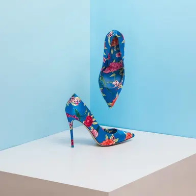

Welcome to our shoe showcase. Below you'll find a selection of our top shoes, each with a brief description and image.

Description: trendy sneaker combines style and comfort, perfect for any casual outing. Its modern design makes it a must-have.

Description: The Classic Loafer offers timeless elegance and sophistication. Ideal for formal occasions or a polished everyday look.

Description: Designed for performance, this running shoe ensures maximum comfort and support for your workouts and runs.

Description: This elegant dress shoe is perfect for formal events, providing both comfort and style. Its refined design is a classic choice.

Description: For those laid-back days, the Casual Slip-On offers effortless style and comfort. Easy to wear and perfect for a relaxed look.

Description: Built for adventure, this hiking boot provides excellent support and durability for your outdoor excursions. Conquer any trail with confidence.
If you have any questions about our shoes, please feel free to email us.